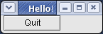
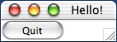
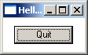
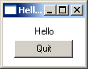
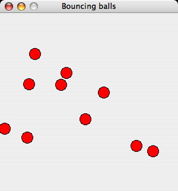
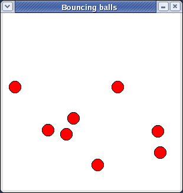
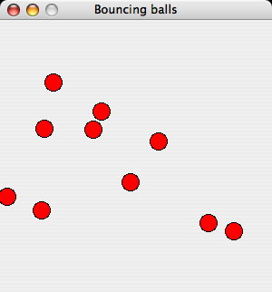
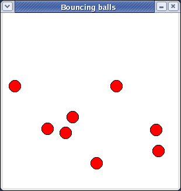

A quick start with wxHaskell
This document is written to get you started quickly with writing wxHaskell applications.
Further documentation can be found on the documentation page.
Note from the author: I have written this page to be in close correspondence with the
yahu getting started page –
first of all to make my job easier by reusing
Koen Claessen's excellent example, but also since
it makes an interesting comparison: we reuse many concepts of yahu, most notably properties
and attributes, but as yahu is based on Tcl/TK, the applications are also
typed and structured in a fundamentally different way.
Daan Leijen
Hello world in wxHaskell
Start your favorite editor and write the following program (that will show a frame with
a single button that closes the frame when pressed).

module Main where
import Graphics.UI.WX
main :: IO ()
main
= start hello
hello :: IO ()
hello
= do f <- frame [text := "Hello!"]
quit <- button f [text := "Quit", on command := close f]
set f [layout := widget quit]

Now start GHCi and run the program:
> ghci -package wx Hello.hs
[snip]
Loading package wx ... linking ... done.
Compiling Main ( Hello.hs, interpreted )
Ok, modules loaded: Main.
*Main> main
Note: On MacOS X, you can only use the interpreter with special scripts,
as you need to build MacOS X applications.
Normally, the following commands will do the job:

> ghc -package wx -o hello Hello.hs
> /usr/local/wxhaskell/bin/macosx-app -v hello
> ./hello
You can read the MacOS X
notes for more information on using wxHaskell on MacOS X,
and how to use it from an interpreter prompt.
Types
A typical wxHaskell program imports the Graphics.UI.WX library. If you need to access
specific wxWidgets functionality, you would also import the lower level Graphics.UI.WXCore library.
The main function uses start to start our GUI. The function start
initializes the GUI framework with the provided argument and starts the window event loop until the application
quits or when all top-level windows are closed. The GUI itself is described with the following functions:
frame :: [Prop (Frame ())] -> IO (Frame ())
button :: Window a -> [Prop (Button ())] -> IO (Button ())
text :: Attr (Window a) String
layout :: Attr (Frame a) Layout
(:=) :: Attr w a -> a -> Prop w
set :: w -> [Prop w] -> IO ()
command:: Event (Control a) (IO ())
on :: Event w a -> Attr w a
widget :: Window a -> Layout
Actually, some of these functions have (even) more general types – you can use the :t
command in GHCi to see them.
The types Frame () and Button () denote graphical objects. These objects can
have properties. When an object is created we can supply an initial list of properties but we
can also set them later using set. The type of properties for frames are
Prop (Frame ()) and for buttons Prop (Button ()).
Properties are created by combining attributes with values. Examples of attributes are
text and layout. An attribute of type Attr w a applies to objects
of type w and values of type a. Values can be assigned to attributes using the
(:=) operator. You can find out more about attributes in the haddock documentation
for the modules WX.Attributes and
WX.Classes.
Somewhat special attributes are events. An event of type Event w a can be
transformed into an attribute Attr w a using on. The value of an event
attribute is normally an IO action that is executed when the event happens.
Find out more about events in the haddock documentation for
WX.Events and the lower level
WXCore.Events
Since wxHaskell is based on an object-oriented framework, we also encode inheritance. The extra
type parameter of objects encodes the inheritance relationship. When the parameter of an object is
unit (), it denotes an object of that exact class. When the parameter is a type variable
a, it denotes any object that is instance of that class. For example, both the frame
and button functions return precisely a frame or button and use a () type parameter.
However, the text attribute applies to any kind of window, including frames and buttons, and
has a Window a as its argument. We can now use the text attribute for example
for both frames and buttons. In wxHaskell, this works since a Frame () is actually a type synonym for
Window (CFrame ()) and can thus be passed where a Window a is expected.
The same hold for a Button () that is a synonym for Control (CButton ())
that is again a synonym for Window (CControl (CButton ())).
Layout
The layout of a window is specified through the layout attribute. The layout of the
current program is rather terse and we will spice it up by letting the button float in the center
when the window is resized. This is also a good opportunity to add a small margin around the button.

set f [layout := margin 10 (floatCentre (widget quit))]
We can also add a text label above the button that is also centered. The argument of column
specifies the amount of space between the items.

set f [layout := margin 10 (column 5 [floatCentre (label "Hello")
,floatCentre (widget quit)
] )]
You can find out more about layout in the documentation for the
WXCore.Layout module.
Bouncing balls
It is time for a more fun program that our Hello sample. We will write a program that lets us
bounce balls on the screen!

 



Note that the bouncing balls window is not resizeable, with the maximize box greyed out on windows.
First we look at the main function in our program – ballsFrame:
module Main where
import Graphics.UI.WX
radius, maxX, maxY :: Int
maxY = 300
maxX = 300
radius = 10
maxH :: Int
maxH = maxY - radius
main = start ballsFrame
ballsFrame
= do
vballs <- varCreate []
f <- frameFixed [text := "Bouncing balls"]
p <- panel f [on paint := paintBalls vballs]
t <- timer f [interval := 20, on command := nextBalls vballs p]
set p [on click := dropBall vballs p
,on clickRight := (\pt -> ballsFrame)
,on (charKey 'p') := set t [enabled :~ not]
,on (charKey '-') := set t [interval :~ \i -> i*2]
,on (charKey '+') := set t [interval :~ \i -> max 1 (i `div` 2)]
]
set f [layout := minsize (sz maxX maxY) $ widget p]
where
...
Unlike more functional GUI libraries, wxHaskell does not provide a model for state management and uses
simple mutable variables to communicate state across different event handlers. (Note: this is a concious
design decision – as functional GUI interfaces are still very much a research area, we
want to provide a full fledged GUI library using simple IO first, than try to build good
functional interfaces on top of that). The state of the bouncing balls demo is a list of balls. Each ball
is represented as a list of all its future heights. At the start of the program the list is empty
(varCreate []).
Next, we use fixedFrame to create a non-resizeable window frame. A panel is created to
paint the balls on and its paint handler paints the current balls in the panel. (Note:
a panel has nothing to do with a Java panel: it is a widget that is normally used to place controls in
as it manages control navigation keys like tab).
To animate the balls, we install a timer that advances all the balls on each timer tick and
causes the panel to repaint the balls. We also install event handlers that react on the user: a mouse
click causes a new ball to drop, a right click opens another frame (!), a p-key pauses the
balls, and +/- increase/decrease the speed of the balls. Note how the operator
(:~) applies a function to an attribute value instead of assigning one. Thus, the
expression (set t [enabled :~ not]) flips the enabled state of the timer.
Finally, we specify the layout of the frame, using minsize to specifiy the minimal size
of the panel and thus the size of the frame as it is not resizeable.
Painting
Let us look at the paint event handler of the panel:
paintBalls :: Var [[Point]] -> DC a -> Rect -> IO ()
paintBalls vballs dc viewArea
= do balls <- varGet vballs
set dc [brushColor := red, brushKind := BrushSolid]
mapM_ (drawBall dc) [p | (p:ps) <- balls]
drawBall dc pt
= circle dc pt radius []
A paint event handler gets two arguments: a device context (DC) to draw on and a
rectangle that specifies the coordinates of the viewing area.
We have supplied the first argument ourselves when setting the event handler, namely the mutable
variable that holds the list of all balls.
As said, a single ball is represented as a list of all its future positions. When painting the current
balls, we simple extract the head positions of all balls and draw them using drawBall. Drawing
combinators like circle draw using the current pen, brush, and font
of the device context. By default, a brush is transparent so we set it to a solid red brush before drawing
the circles. Note that this is an optimization, we could have achieved the same effect by setting it for
each circle individually: circle dc pt radius [brushKind := BrushSolid, brushColor := red].
You can read more about drawing in the documentation of the
WX.Draw module.
Bouncing
The timer event handler uses nextBall to advance all the balls to their next postion.
nextBalls :: Var [[Point]] -> Panel () -> IO ()
nextBalls vballs p
= do varUpdate vballs (filter (not.null) . map (drop 1))
repaint p
Updating the positions simply consist of dropping all initial positions and filtering out all empty
lists. The function repaint is used to invoke the paint event handler of the panel.
When a users clicks on the panel, a new ball is created in dropBall.
dropBall :: Var [[Point]] -> Panel () -> Point -> IO ()
dropBall vballs p pt
= do varUpdate vballs (bouncing pt:)
repaint p
bouncing (Point x y)
= map (\h -> Point x (maxH-h)) (bounce (maxH-y) 0)
bounce h v
| h <= 0 && v == 0 = replicate 20 0
| h <= 0 && v < 0 = bounce 0 ((-v)-2)
| otherwise = h : bounce (h+v) (v-1)
We prepend a new list of ball positions to the existing list using the varUpdate function
and we repaint the panel. The new list of positions is calculated with the bouncing function
that takes the position of the mouse pointer as its argument. This function uses the bounce
function to calculate all future heights given an initial height and speed. Each time the ball touches
the ground, it loses 2 units of speed.
Hopefully this sample inspires you to write more interesting GUI's. Don't forget to look
at the samples provided with the wxHaskell documentation.